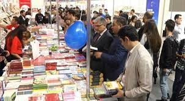

The opening ceremony of the 9th Baku International Book Fair has been held today at Baku Expo Center.
Adil Karimli, Minister of Culture of the Republic of Azerbaijan, Academician Nizami Jafarov, Deputy of the Milli Majlis of the Republic of Azerbaijan, Academician Nizami Jafarov, Deputy of the Milli Majlis of the Republic of Azerbaijan, Academician Isa Habibbayli, the President of the Azerbaijan National Academy of Sciences, Sabina Aliyeva, Commissioner for Human Rights (Ombudsman) of the Republic of Azerbaijan, Mikhail Yevdokimov Ambassador Extraordinary and Plenipotentiary of Russia to Azerbaijan, Rashad Majid, Chairman of the Azerbaijan Press Council, Deputy Chairman of the Union of Azerbaijani Writers, Hikmet Mammadov, deputy of the Milli Majlis of the Republic of Azerbaijan and General Director of Caspian Event Organisers Farid Mammadov participated at the opening ceremony.

sergide en cox teleb olunan kitablarin siyahisini size teqdim edirik